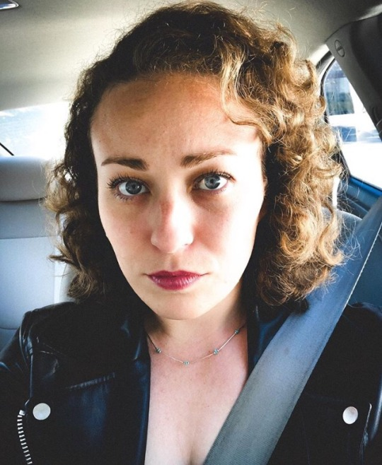
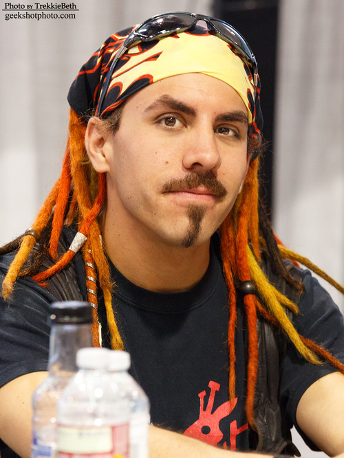

Performer info
David Michael Bennet
Born: October 7, 1986, San Diego, California
Height: 6′ 3″
Eye Color: Hazel
Hair Color: Black (Naturally Dirty Blonde)
Bio: David Bennett was born the eldest brother to his identical twin, Isabella Bennett (AKA Rabbit). He is exactly one minute older than his sister and has no other siblings. David’s childhood gave him enough room to let his creative juices flow and develop. Drawing, plastic model building, computer programming, and taking technology apart and putting it back together again were all staples of his childhood.
In high school he worked towards his A+ Certification in computers and looked towards becoming an IT Technician. A divorce between his parents turned David’s life upside down during his Junior year, at which point he joined the drama department, started to learn how to play guitar, and made new friends.
David graduated high school with honors and some school plays under his belt. He immediately got a job working as a Data Entry personnel at his father’s work and started going to Grossmont College. David auditioned for productions at the college and began to take a multitude of general education classes and Theatre Arts classes. David’s job as a Data Entry personnel changed to that of an IT Technician, Graphic Designer, and Print Operator once his and his sister’s already developed art & technological skills became realized by the company.
David met his future mime instructor Jerry Hager for the first time when he took his Beginning Acting class in college. David knew of Jerry’s “miming” down at Seaport Village and even visited his professor a few times while he was performing. It wasn’t until his sister Isabella took Jerry’s mime class, and recommend that he take it with her again the following year, that David was introduced to the beauty of the art of mime and movement.
Steam Powered Giraffe started during his college years with his sister and some other friends who were interested at the time. He wanted to incorporate playing music into the robot act almost immediately in conceptual stages.
David is currently performing and working with Steam Powered Giraffe full-time.
He manages the band’s show contracts, store, and merchandise shipping with fellow band member Chelsea Penyak, and handles the accounting and finances as well.
He also provides his voice and instrumental abilities to the band’s albums and he serves as the band’s recording engineer, mixing all of the final mixes for their albums.
Robot info
Built: 1896
Style: Futurism
Instruments Guitar, Bass, Keys, Mandolin
Features: Titanium alloy spinal column, blue matter ray projector arrays, tesla coil high voltage discharger
Bio: The Spine, like his fellow Steam Powered Giraffe band members, was created in 1896 by an inventor named Peter A. Walter, to be featured at the Cavalcadium’s scientific convention.
The Spine was originally created with a spinal column made up of smokestacks similar to a locomotive, thus he was appropriately named The Spine. In 1955, the US government invested millions of dollars into upgrading The Spine. Therein he received a brand new titanium alloy spine, and a multitude of highly classified weapons.
Along with his weapon upgrade, The Spine received new adaptive programming. Instead of being an old fashioned automaton, The Spine was reprogrammed and redesigned to more closely represent a human. This way, he could serve Uncle Sam by performing special ops missions as their number one ‘guy’, without any human lives being put in danger.
The upgrades were a success technically speaking; however, they weren’t put to good use in Vietnam, where guerrilla warfare overpowered all of Walter’s robots- including The Spine.
Despite a history of war, The Spine does not like violence, even in the service of his country. He, along with the rest of the Walter automatons have downloaded a vow of peace since Vietnam, and will not use their weapons.
As a musician, The Spine plays the acoustic guitar, the bass, keys, and the mandolin.
The Spine is a stoic automaton, and often plays the straight man in the trio of robot musicians. The Spine tries the most to fit in and be human around organic company, but spends most of his time interfacing with the Walter’s in-house computer network via The Hall of Wires.
Performer info
Isabella “Bunny” Bennett
Born: October 7, 1986, San Diego, California
Height: 6′ 1″
Eye Color: Hazel
Hair Color: Dirty Blonde
Bio: Isabella “Bunny” Bennett is the transgender identical twin of David Bennett. She is a mime, actor, graphic designer, and illustrator.
Her interests include movies, monsters, dinosaurs, art, and theatrical makeup.
Her artistic inspirations include Dali, Burne Hogarth, and Leonardo DaVinci.
When Bunny was a child she would draw continuously, and wanted to be a cartoonist when she grew up.
Always highly imaginative along with her brother, she would come up with quirky stories and characters and express them through drawings and little comic books she would make.
In high school she joined the drama department after seeing her brother in a play, and graduated with honors.
From high school she attended the Art Institute of California, majoring in Game Art and Design, but as the first year curriculum went on, she dropped out, foreseeing a stale career of drawing muscular men and rendering football players. She wasn’t convinced it would be a job where her imagination could wander and freely thrive.
She once again dabbled in acting, but this time at Grossmont Community College, where she took Jerry Hager’s mime class along with Jon Sprague and Erin Burke. She urged her brother to take it with her the following year, and having found enjoyment doing pantomime, the four of them took it a third year as well, spawning the Steam Powered Giraffe act.
Today, when not being a robot, Bunny illustrates in her free time and works on other creative endevors.
Robot info
Built: 1896
Style: Steampunk
Instruments Melodica, Accordion
Features: Victorian gear-driven motors, kinetic projectile chambers, antique particle accelerator lens device
Bio: In 1896, Peter Alexander Walter built his first humanoid robot. Rabbit was made with a copper exterior, and ran off of a new form of energy: Blue Matter.
Rabbit wasn’t always a girl robot though. For the longest time the robot was just another one of the guys. An incomplete skeletal copper Victorian man. Or so everyone thought.
The name Rabbit comes when the bot was just a curious head on Walter’s table. Having just made the world’s first artificial intelligence, Peter Walter was excited to explore the robot’s abilities. He pointed to a lab animal in a cage, and said; “Rabbit.”
“Raa-bit,” the robot said.
Peter was so astonished and delighted when the robot repeated the word back to him, that he pointed at other things in the lab, wondering if he could teach it more words. But all the robot would say all night was Rabbit, and that’s how she got her name.
Rabbit went on to fight against Becile’s copper elephants in 1897, outfitted with a prototype blue matter laser lens array, a Gatling Gun attachment, and a collapsible buzz saw. Rabbit’s combat history also spans WWI, WWII, and the Vietnam war.
Many years later, at the start of the new year in 2014, Rabbit started going more haywire. Fearing a blue-matter leak, Peter Walter VI went to repair the mysterous inner workings by referencing a previously thought lost blueprint of Rabbit.
Much to the Walter’s surprise, Peter Walter the First always intended Rabbit to be a girl but never completed her due to the war that broke out between him and his rival inventor way back when.
Peter Walter VI fixed Rabbit best he could, finally finishing the job on the incomplete automaton girl.
As a musician, Rabbit plays the keytar and accordion.
Rabbit is a well-intentioned robot, but she is prone to the most malfunctions because of her archaic interiors. Unlike many of the other robot musicians, Rabbit still possesses many of her Victorian parts, which makes her quite clumsy. She is always making puns, and her favorite activity outside of entertaining is feeding the ducks at the Walter Cemetery.
Performer info
Bryan D. Barbarin
Born: June 15, 1987, San Diego, California
Height: 5′ 10″
Eye Color: Brown
Hair Color: Black
Bio: Bryan Barbarin is the youngest and loudest of 5 siblings. At a young age he found his heart on the stage, (Don’t worry the heart was fine once he brushed it off) and since then he has dedicated his life to the performing arts…kind of.
After solidifying his love for the theatre in high school, Bryan moved on to Grossmont College where he met the Bennetts. Not only did they perform in several shows together, as well as start their own improv group together, they also all took mime from the famous Jerry Hager. After watching the Bennetts brilliantly display their abilities in class Bryan decided that maybe he should go another route. He started working professionally for many of the theaters around San Diego including; Lamb’s Players Theatre, Cygnet, San Diego Rep, National Comedy Theatre, SDMT, and New Village Arts.
After achieving moderate success and creating many lifelong friend/family in the SD theatre Community, Bryan moved on to play with The Routine. The Routine is a brotherhood of musicians formed from the ashes to radiate a fire of funk and soul that will spread love across this earth. This sparked up his love for performing music so when he got an opportunity to reunite with Bennetts in that capacity, he couldn’t turn it down. He couldn’t be happier to be part of the SPG family!
Robot info
Built: 1896
Style: Swing
Instruments Bass, Piano
Features: Projectile grappling spear and hook with retractable chain, prototype beam arrays, and advanced pneumatic hydraulic systems
Bio: Beautiful were the systems Peter A. Walter I developed for robotic movement, and diabolical was the arsenal of devices he outfitted his mechano-men with. To fight in the great robot war of 1896, they all were equipped with a multitude of claws, chains, blades, heat rays, death rays, gatling guns, machine saws, cannons, and Tesla coil electrical dischargers.
Miles underneath his manor in San Diego, California, Peter had developed and tested these dangerous weapons, and when work was nearly complete on fashioning his robot army, he did not leave any of his resources untapped.
Prototype-0 was the hastily fused together remains of all the prototype systems Peter had developed. From three incomplete robots Peter forged the mighty automaton of immense strength and resilience. “Zero,” as he became known, was even able to fell one of Becile’s mechanical elephants all by himself using his grappling hook chain mechanism.
Zero was an indisputable asset in battle, but when Peter’s creations were refashioned for their original purpose of entertainment after the war, he was abandoned in the facility of his inception far beneath Walter Manor.
For nearly a hundred years the automaton’s core powered the very sub-levels of the Walter family’s workshop, and he was all but forgotten down in the depths until Beebop noticed the robot’s existence in 1992 while searching the archives in maintenance. He happily powered Zero on and the two of them became good friends, enjoying old records and films that had been stashed in the abandoned facility.
Over the years Zero became infatuated with the various Motown records stored down with him, and he absorbed the material with much gusto.
In 2008, while testing out his new rocket elevator, Peter Walter V was enchanted by a gorgeous voice emanating from one of the lowest decks of the Walter workshops. When he stumbled upon Zero, he knew he had to reconstruct the robot for entertainment, and thus the musical legacy of Zero’s career was born.
It wasn’t long after joining the band that Zero became “the face” of Steam Powered Giraffe. He skyrocketed into popularity until in 2012, he left the band for a solo career under a competing label. The Walter family lost the rights to Zero’s likeness and voice and he had to be edited out of all previous material.
Zero’s fame and wealth soared as a solo musician. He even had his own reality TV show, “Zero’s House” and a sugary breakfast cereal, “Zer-e-Os.” But his success was short lived when a bad investment left the robot millionaire penniless. Zero wanted to invest his earnings into love, but was unaware that love only existed as a feeling and was not something that you could buy stock in.
In 2015, Zero released his biography, “How I Lost All My Money By Investing in an Abstract Concept.” It only sold one copy.
Bankrupt and broken, Zero returned home to Walter Manor with the only possession left in his name: A yacht named “Floaty Time.” After repaving the roads and driveway Zero tore up while dragging a boat through the streets, Peter Walter VI was approached by Hatchworth, who saw this as the perfect opportunity to go and pursue his main passion of ‘gold-fishing.’
While unsure what that even was, Peter and the robots waved goodbye to Hatchworth and welcomed Zero back into the act for the year 2017.
Zero’s popularity may soon be on the rise, as over two people liked his photo already on Facebook. Today the washed up super-star enjoys hanging with his favorite disembodied robot head Beebop and watching soft serve ice cream melt on a hot day.
Performer info
Chelsea Penyak
Born: May 27, 1989, San Diego, California
Height: 5′ 5″
Eye Color: Blue/Gray
Hair Color: Dark Blonde
Bio: Chelsea Penyak, a San Diego native, made her first stage appearance as a student of City Ballet of San Diego at the age of 7. She continued her training with City Ballet of San Diego under the direction of Steven and Elizabeth Wistrich (formerly of the Stuttgart Ballet). She trained and performed in ballet for 13 years, appearing in professional productions including Don Quixote, The Nutcracker , and George Balanchine’s Stars and Stripes.
Upon retiring from professional dance, Chelsea went on to serve as City Ballet of San Diego’s ticket sales manager and patron services manager for 5 years. She still works closely with the local ballet company as one of their live performance/promotional photographers, a title she’s held since 2007.
Chelsea joined Steam Powered Giraffe in March 2014, and continues to work with the band today, as a merchandise associate and performer.
Together with her sister Camille, who joined Steam Powered Giraffe as a Walter Worker in September 2014, she made her debut in choreography, staging a ballet section for the band’s live shows in 2015.
With previous experience on stage and in patron services, and combined with her love of travel, she has greatly enjoyed working with San Diego’s robot band!
Walter Worker info
Bio: At Walter Robotics we take every precaution with our highly incomprehensible technology. We send a minimum of two Walter Blue Matter Engineer to every show that our robots perform at!
Introducing, the Walter Workers!
Being a Walter Worker takes months and months of extensive training to hone a specialized affinity towards blue matter itself. Even though malfunctions are (mostly) non-existent with the performances, the Walter Workers are always on the job to make sure the robots’ machinery is working in top order.
What’s with the blue hair and pale skin? Well, we don’t know. But we’re sure it has nothing to do with working extensively with blue matter cores. Honest!
So don’t worry! You’re in good hands folks! And most of our Walter Blue Matter Engineers do have hands!
Performer info
Camille Penyak
Born: March 5, 1652, Somewhere, Someplace
Height: 5′ 5″
Eye Color: Eye ball white
Hair Color: Hair colored
Bio: Camille Penyak, born and raised in San Diego California, gained a love of the performing arts at the age of 5. Inspired by her big sister Chelsea, she tried on a pair of ballet shoes and never looked back. At City Ballet of San Diego, under the direction of Steven and Elizabeth Wistrich (formerly of the Stuttgart Ballet), she trained for almost 14 years. Along with her resident instructors, Camille also had the opportunity to train with star guest artists such as Gelsey Kirkland, David Howard, Fernando Bujones, Alonzo King, and Susan Jaffe. During her time as a student, she went on to join the professional company as a trainee (2007-2010) and an apprentice (2010-2011). With extensive stage experience from a very young age, Camille never felt more at home than when she was performing for an audience or just rehearsing in a studio. During her time in the professional company she appeared in productions such as Swan Lake, Giselle, Don Quixote, The Nutcracker, and Peter Pan. She also worked with Sandra Jennings of the Balanchine Trust in preparation for demi-soloist and corps roles in the production of George Balanchine’s Walpurgisnacht Ballet, a highlight of her performing career.
While slowly easing out of performing professionally, Camille remained at City Ballet of San Diego working as an administrative assistant and the company’s social media manager for two years. Camille joined Steam Powered Giraffe as a Walter Worker in September 2014, getting the opportunity to perform onstage with her sister for the first time in many years. Along with her duties as a merchandise associate and stage performer, she has also collaborated with Chelsea to choreograph ballet pieces to live performances of Turn Back the Clock in 2015 and Hold Me in 2016. In her time away from the band, she works in another scene she enjoys: a local independent bookstore. Still with Steam Powered Giraffe today, she feels lucky enough to continue to do what she loves and work in such a creative environment with very talented artists!
Walter Worker info
Bio: At Walter Robotics we take every precaution with our highly incomprehensible technology. We send a minimum of two Walter Blue Matter Engineer to every show that our robots perform at!
Introducing, the Walter Workers!
Being a Walter Worker takes months and months of extensive training to hone a specialized affinity towards blue matter itself. Even though malfunctions are (mostly) non-existent with the performances, the Walter Workers are always on the job to make sure the robots’ machinery is working in top order.
What’s with the blue hair and pale skin? Well, we don’t know. But we’re sure it has nothing to do with working extensively with blue matter cores. Honest!
So don’t worry! You’re in good hands folks! And most of our Walter Blue Matter Engineers do have hands!
Info
Born: October 21, 1985, Arlington, Virginia
Height: 5′ 8″
Eye Color: Brown
Hair Color: Brown
Bio: Steam Powered Giraffe’s human MC and sound operator. Without Steve…we wouldn’t know what to do with all these decibles.
Steve was born in the faraway land of Virginia, but his family relocated to Southern California when he was very young. Therefore, he considers himself to be a Southern California native by assimilation. As the youngest of three brothers, Steve constantly found himself following in his sibling’s footsteps simply because he thought it was expected of him. Because his brothers were both aspiring musicians, Steve decided to try his hand at the trombone. He was involved with the school band through the whole of middle school and high school, but feels like high school marching band robbed him of four years of his life.
However, his high school band room was located next to the school theatre, and as Steve’s interest in performing music declined, his interest in performing onstage increased. As he performed in more and more plays (which sometimes conflicted with that blasted marching band), he made the decision to take his major in theatre as he made the journey into college.
Steve’s two years at Palomar Community College saw little theatre due to general course requirements, but he did manage to perform the lead role in his final semester. This made for an excellent transition into the University of California, San Diego, where he was inundated with nothing but theatre classes. While at university, Steve signed up to run the sound board for one fateful show entitled The Labyrinth of Desire. This show spring-boarded young Steve into the world of theatrical sound, and he took more and more classes that allowed him to work hands-on with the audio department, and eventually land an overhire job at the La Jolla Playhouse.
After graduating from UCSD, Steve took some audio gigs here and there at theatres such as the Old Globe and North Coast Rep, but luck decided to smack him in the face like a frozen tuna. a full-time staff position opened up at the University, and because of his excellent work ethic and familiarity with the various theatre spaces, Steve got the job. He now spends his weeks installing and calibrating full-scale theatrical sound systems as the Sound Shop Foreman of the UCSD Theatre and Dance department.
Steve came to meet Steam Powered Giraffe through sheer luck when he attended a Tragic Tantrum Cabaret show at which the bots performed. From then on, Steve came to as many of SPG’s Balboa Park shows as he could. There, he acquainted himself with the band and eventually suggested that he help out with one of their live shows. Nowadays you will inevitably see him swaying to the beat behind a mixing board whenever the bots plug in and perform.
Info
Born: June 18, 1987, San Jose, California
Height: 6′ 3″
Eye Color: Blue
Hair Color: Brown
Bio: Michael was born in San Jose, CA. Michael’s father was a concert accordionist at the age of 15, and got Michael started playing the piano when Michael was about 8 years old. At first he focused solely on a piano style called “stride piano”, eventually becoming interested in and focusing on the styles of blues, boogie woogie, classical, jazz and funk, culminating in his own current style. Michael’s mother has been a gigging singer/guitarist/songwriter since she was 14 years old, and both his parents instilled in Michael a great respect and love for all kinds of music, from classical to contemporary. He lived in the bay area until he was 13, and moved to San Diego at the beginning of the year 2000. He attend Parkway Middle School, where by chance he met Jon Sprague (The Jon). Their friendship grew, and Jon would eventually introduce Michael to the guitar when Michael was 17 years old.
At first Michael was mostly interested in fingerstyle guitar, because he found he could sound almost like a piano, playing bass parts, chords, and melodies on top of each other at the same time. Just as on the piano though, he eventually started becoming interested in blues, rock, classical, jazz and funk. Around this same time he started becoming interested in singing, writing and composing. He also became fully engaged in learning other instruments like the banjo, bass guitar, drum set, ukulele, synthesizers, harmonicas, tenor mandolin, mallet instruments and other percussion instruments etc. Michael dedicated most of his life around this point onwards towards being moderately skilled at these instruments. At 18, Michael completely immersed himself in audio recording and engineering, investing in some equipment and microphones to start recording himself singing and playing his own musical ideas.
By the age of 19 Michael had left college to start playing in local bands, one of the bands eventually touring around the United States for a couple years. He had a taste of success playing at festivals on the same bills as Willie Nelson, and The Squirrel Nut Zippers. Around the age of 22, Michael was contacted by Steam Powered Giraffe to record Steam Powered Giraffes first studio album, Album One. They gave Michael the freedom to explore and invent sounds and ideas, drawn from and inspired by the lyrics of the songs. After the completion of Album One, he was asked to become a permanent member of the band to flesh out the sound. Michael started busking with Steam Powered Giraffe, and for the first year of plugged-in stage shows, being the only additional member, Michael would sing and play the piano, guitar or bass while also playing the drum set at the same time, which gave birth to the name “The One Man Band”.